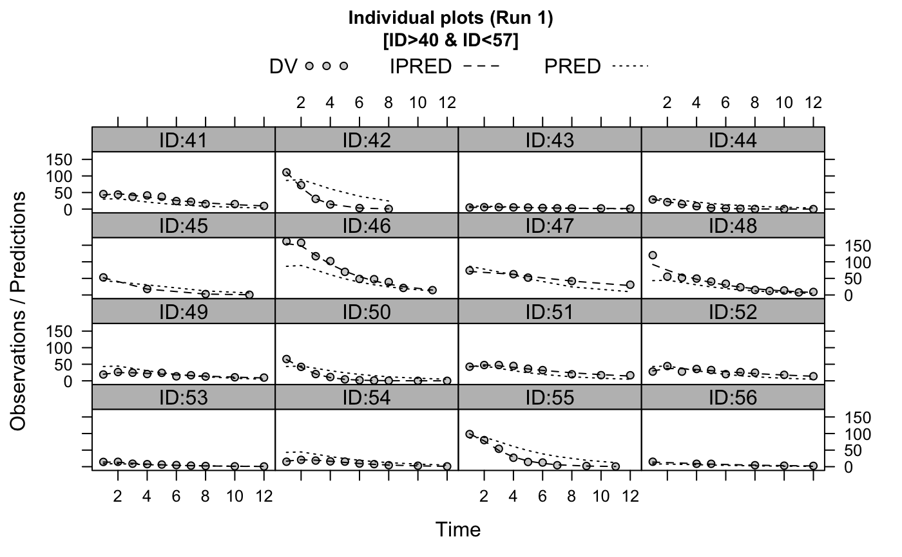

R/ind.plots.R
ind.plots.RdThis is a compound plot consisting of plots of observations (DV), individual
predictions (IPRED) and population predictions (PRED) against the
independent variable for every individual in the dataset, a specific
function in Xpose 4. It is a wrapper encapsulating arguments to the
xpose.plot.default function.
ind.plots( object, y.vals = c(xvardef("dv", new.obj), xvardef("ipred", new.obj), xvardef("pred", new.obj)), x.vals = xvardef("idv", new.obj), id.vals = xvardef("id", new.obj), key.text = y.vals, main = "Default", key = "Default", xlb = xlabel(xvardef("idv", object), object), ylb = NULL, layout = c(4, 4), inclZeroWRES = FALSE, subset = xsubset(object), type = "o", grid = FALSE, col = c(1, 2, 4), lty = c(0, 1, 3), lwd = c(1, 1, 1), pch = c(21, 32, 32), cex = c(0.7, 0.7, 0.7), fill = c("lightgrey", 0, 0), prompt = FALSE, mirror = NULL, main.cex = 0.9, max.plots.per.page = 1, pch.ip.sp = c(21, 19, 18), cex.ip.sp = c(0.7, 0.4, 0.4), y.vals.subset = NULL, ... )
| object | An xpose.data object. |
|---|---|
| y.vals | The Y values to use. |
| x.vals | The X values to use. |
| id.vals | The ID values to use. |
| key.text | The text in the legend to use. |
| main | The title of the plot. If |
| key | Create a legend. |
| xlb | A string giving the label for the x-axis. |
| ylb | A string giving the label for the y-axis. |
| layout | A list giving the layout of the graphs on the plot, in columns and rows. The default is 4x4. |
| inclZeroWRES | Logical value indicating whether rows with WRES=0 is included in the plot. The default is TRUE. |
| subset | A string giving the subset expression to be applied to the
data before plotting. See |
| type | 1-character string giving the type of plot desired. The default
is "o", for over-plotted points and lines. See
|
| grid | Should the plots have a grid in each plot? |
| col | A list of three elements, giving plotting characters for observations, individual predictions, and population predictions, in that order. The default is black for DV, red for individual predictions, and blue for population predictions. |
| lty | A list of three elements, giving line types for observations, individual predictions, and population predictions, in that order. |
| lwd | A list of three elements, giving line widths for observations, individual predictions, and population predictions, in that order. |
| pch | A list of three elements, giving plotting characters for observations, individual predictions, and population predictions, in that order. |
| cex | A list of three elements, giving relative point size for observations, individual predictions, and population predictions, in that order. The default is c(0.7,0.7,0.7). |
| fill | Fill the circles in the points? |
| prompt | Specifies whether or not the user should be prompted to press RETURN between plot pages. Default is TRUE. |
| mirror | Mirror plots are not yet implemented in this function and this
argument must contain a value of |
| main.cex | The size of the title. |
| max.plots.per.page | Maximum number of plots per page. |
| pch.ip.sp | If there is a panel with just one observation then this specifies the type of points for the DV, IPRED and PRED respectively. |
| cex.ip.sp | If there is a panel with just one observation then this specifies the size of the points for the DV, IPRED and PRED respectively. |
| y.vals.subset | Used to subset on the DV, IPRED and PRED variables
separately. Either |
| ... | Other arguments passed to |
Returns a stack of plots observations (DV) against individual predictions (IPRED) and population predictions (PRED).
A wide array of extra options controlling xyplots are available. See
xpose.plot.default and xpose.panel.default for
details.
Matrices of individual plots are presented for comparison and closer inspection.
xpose.plot.default,
xpose.panel.default, xyplot,
strip.default, xpose.prefs-class,
xpose.data-class
Other specific functions:
absval.cwres.vs.cov.bw(),
absval.cwres.vs.pred.by.cov(),
absval.cwres.vs.pred(),
absval.iwres.cwres.vs.ipred.pred(),
absval.iwres.vs.cov.bw(),
absval.iwres.vs.idv(),
absval.iwres.vs.ipred.by.cov(),
absval.iwres.vs.ipred(),
absval.iwres.vs.pred(),
absval.wres.vs.cov.bw(),
absval.wres.vs.idv(),
absval.wres.vs.pred.by.cov(),
absval.wres.vs.pred(),
absval_delta_vs_cov_model_comp,
addit.gof(),
autocorr.cwres(),
autocorr.iwres(),
autocorr.wres(),
basic.gof(),
basic.model.comp(),
cat.dv.vs.idv.sb(),
cat.pc(),
cov.splom(),
cwres.dist.hist(),
cwres.dist.qq(),
cwres.vs.cov(),
cwres.vs.idv.bw(),
cwres.vs.idv(),
cwres.vs.pred.bw(),
cwres.vs.pred(),
cwres.wres.vs.idv(),
cwres.wres.vs.pred(),
dOFV.vs.cov(),
dOFV.vs.id(),
dOFV1.vs.dOFV2(),
data.checkout(),
dv.preds.vs.idv(),
dv.vs.idv(),
dv.vs.ipred.by.cov(),
dv.vs.ipred.by.idv(),
dv.vs.ipred(),
dv.vs.pred.by.cov(),
dv.vs.pred.by.idv(),
dv.vs.pred.ipred(),
dv.vs.pred(),
gof(),
ind.plots.cwres.hist(),
ind.plots.cwres.qq(),
ipred.vs.idv(),
iwres.dist.hist(),
iwres.dist.qq(),
iwres.vs.idv(),
kaplan.plot(),
par_cov_hist,
par_cov_qq,
parm.vs.cov(),
parm.vs.parm(),
pred.vs.idv(),
ranpar.vs.cov(),
runsum(),
wres.dist.hist(),
wres.dist.qq(),
wres.vs.idv.bw(),
wres.vs.idv(),
wres.vs.pred.bw(),
wres.vs.pred(),
xpose.VPC.both(),
xpose.VPC.categorical(),
xpose.VPC(),
xpose4-package
E. Niclas Jonsson, Mats Karlsson, Andrew Hooker & Justin Wilkins
## Here we load the example xpose database xpdb <- simpraz.xpdb ## Monochrome, suitable for manuscript or report ind.plots(xpdb, subset="ID>40 & ID<57", col=c(1,1,1), lty=c(0,2,3), strip=function(..., bg) strip.default(..., bg="grey"))if (FALSE) { ## IF we simulate in NONMEM using a dense grid of time points ## and all non-observed DV items are equal to zero. ind.plots(xpdb,inclZeroWRES=TRUE,y.vals.subset=c("DV!=0","NULL","NULL")) # to plot individual plots of multiple variables ind.plots(xpdb,subset="FLAG==1") ind.plots(xpdb,subset="FLAG==2") }